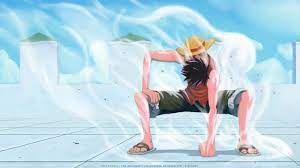
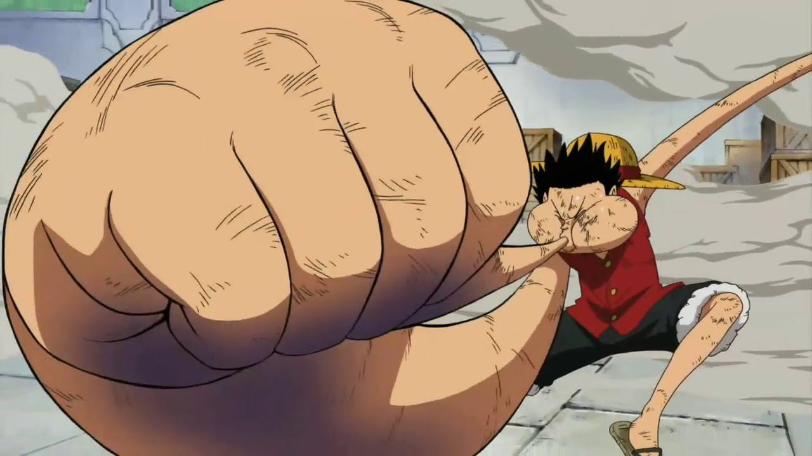
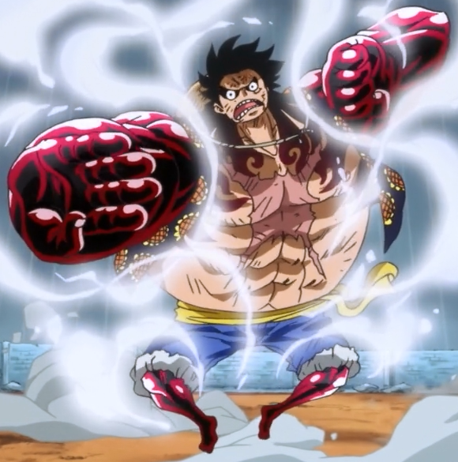

This is Moneky D Luffy's base form. A normal 19 year old in the shape of human man. In this form he is able to utilize his devil fruit, haki and a range of attack however he is limited in strength and power.
Gear Second!!! Speed and increased attack strength. Luffy pumps blood though his body at an increased rate which results in his ability to move his body at an increased speed. This all adds up to devastating attack at a high speed. However by going into this stte luffy puts his body's health at risk, nevertheless we see Luffy post time skip having mastered this technique he no longer puts his body into danger and can tap into this form at any go.
Third Gear. One of Luffys most powerful and interesting techniques. Gear Third is activated by Monkey D. Luffy by biting into his thumb and inflating his body through his bones. With the bones growing larger and stronger, Luffy is granted immense strength, capable of shattering a Marine battleship in a single blow.
Unlike the previous forms, Gear Fourth focuses on compression more than stretching in a manner similar to the Bane Bane no Mi. He can compress his arms, legs, and head. While the compression grants Luffy's moves overwhelming speed and power, the range of his attacks is severely decreased .Gear Fourth was created by Monkey D. Luffy during the two-year time-skip at Ruskaina. To combat the monstrous beasts that inhabited the island, Luffy had to get stronger and use his Haki as effectively as possible. Ultimately, he came up with Gear Fourth; the only gear to have multiple forms at the moment